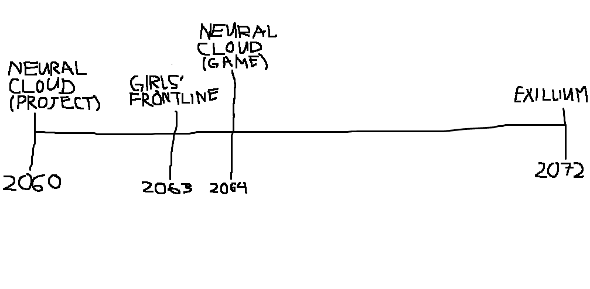

How worth is it to start this game now given how long it's been out?
The best time to plant a tree was twenty years ago. The second best time is now.
- Catching up
- In-game facility called Forward Basecamp that gives a bevy of items for raising Tactical Dolls (your main fighting force).
- Protocol Assimilation for steamrolling early to mid-game content.
- Newbie Career Quests that gives free preleveled units where some of them, namely AR Team, are meta viable.
- Contents
- The only permanently missable ones are mainly minigame cosmetics.
- Major events? Campaign Missions. Banner units? None here. Collabs? Reruns are possible (Note: they're not gamebreaking).
- Stamina
- There is no stamina. But it has a rough equivalent in Manpower, Ammunition, Ration, and Part resources, which can be gathered in bulk indefinitely.
- Storage
- Android ahould be around 5-6GB, iOS is around 10GB.
- Longetivity
- This game will only ever end once they've told all the stories they want to tell. Which is still a lot as of now.
Is there PVP in this game?
There are two kinds of PVP in this game, the highscore leaderboards type (Theater and Event Ranking Maps) and direct (Luffberry Chess).
If you're looking for a more traditional PVP, luckily/unluckily this game doesn't have it.
How much daily engagement does this game need?
Minimal. Resources for pulls are generated passively. Events are months apart aka big bursts in-between lulls (in comparison to usual mobages).
How is the gacha in this game?
The only gacha in this game is cosmetics. Characters/Units/Dolls in this game do not go on a rotating banner, instead once they enter the "gacha pool", they're available permanently. In essence, this game is not a gacha game in terms of unit pulling.
Is it worth to reroll in this game?
Depends on what you value more. If you want a pretty easy time until endgame, game already gives you free strong dolls as part of the newbie missions. Endgame? This is a game of accumulating various tools instead of just a select few meta characters due to the volatile meta shifts. Collab units? They're not gacha or rather, you're guaranteed to get them with a working team.
TLDR; For the most part, the answer is no.
Is this game F2P?
Very much so to the point that quite a number of them are top rankers in major event rankings. It's more about the breadth of units you have than the power of each individual unit.
The only "P2W" is Protocol Assimilation, especially concerning Ringleaders, though it's more of pay to catch-up than anything. It's a major power boost to beginners, a crutch for mid-game players, and an occasional useful tool during end game.
How is the difficulty in this game?
| Stage | Gameplay | Teambuilding | Objectives | Resources | Priorities |
|---|---|---|---|---|---|
| Early game | Simple auto-battle | Any team is fine, using friend echelons adviced | Kill enemies, capture command posts | Low resources and income, using MGs not recommended | Building facilities and core units |
| Mid game | Knowledge of class types and simple kiting | Proper team formation required | Objective completion varies | Stable resource income | Raising fairies (stat buffs) and HOCs (off-map supports) |
| Late game | Advanced kiting, target resets, enemy attack delaying | Specialized compositions focused on skill synergy | Map gimmicks | Abundant resources, mostly gets drained on production rate-up | Raising specialist dolls (casually if preferred) |
| End game | Ranking mald with kiting, crit i-frames | As long as it works | Map control and objectives | Resources dwindling due to indiscriminate deployment | Using duplicates is useful but not necessary |
I heard they made new games of the same series. Is GFL1 going to be phased out?
Not anytime soon considering that they're still adding mechanics in its 7th year and there are more stories to tell. The plan is for all games to be played simultaneously.
Any guide thread I should read before starting out?
- Gamepress
- New Player Hub: How to Girls' Frontline
- GFL Corner
- Website Guide
- Spreadsheet Guide
- Angry Trap Midget/Matsuda
- Getting Started
- First Steps
- Guides
- CosmicArcher
- Walkthrough/Early Game Speedrun
- Advanced Info
- u/ConductorBichir
- Reddit Pinned Posts
- 2.09 Starter Guide
- June Tierlist (Isomer+) finalized by u/BichirMemoriam
- Yuko #1428
Beginner'sGuide to Girls' Frontline- u/ShuviSchwarze
- Mashpit #1075
- u/stae1234
- Ceia
- /gfg/
- u/pointblanksniper
- u/thaurelia
What should I focus on as a beginner?
- 2 ARSMG for general content (Common first team is M4A1, ST AR-15, M4 SOPMOD II, UMP45, Skorpion), 2 RFHG for late-game, and 1 MGSG for specialized enemies
- 8 echelons, where 4 are in permanent logistics
- Forward Basecamp for passive CR and core income
- 3-4 additional dorms for battery generation
- Intelligence Center for generating chips which will be the bottleneck for fully maxed HOCS
- Protocol Control Centre for the newbie-friendly units